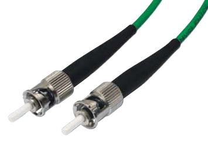

ST standard
- Parts manufactured of high quality materials (metals
and zirconium ceramics).
- Long term mechanical endurance.
- Stability of the transmission parameters.
Connectors
- Zirconium ferrule.
- Low insertion loss.
- hole diameter tolerance from 0 to + 1 µm.
- Short boot ensures minimal bending radius.
- Machine polishing procedure ensures high quality
of end facegeometry and high repeatable performance.
Adapters
- Slotted zirconium ceramic sleeve ensures precise
connection.
- high durability.
- guarantee of the repeatable performance.
Connection type
- Twist-lock bayonet coupling with anti-rotation key.
Application
- Telecommunication.
- LAN/WAN networks.
Available versions
- Single mode and multimode connectors.
- Following cables can be equipped with this connector
type: 900 um tube or PVC cables with the following
diameters: 1.7; 2.0; 2.4 and 2.8 mm.
